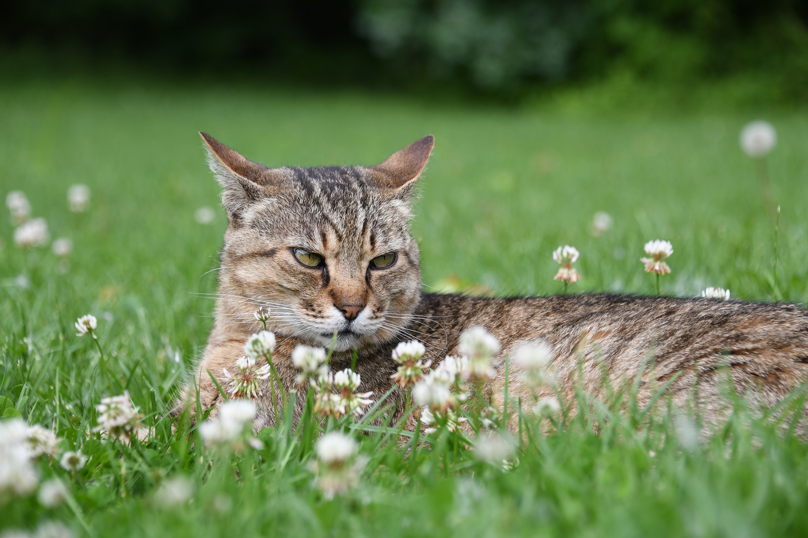

고양이의 감정표현
고양이의 감정표현은 크게 울음소리, 꼬리언어, 귀언어로 구분할 수 있다. 울음소리는 말 그대로 고양이가 내는 '야옹'소리를 말한다. '야옹'은 새끼 고양이가 어미에게 내는 소리로, 성묘 사이에서는 '야옹'을 통한 의사소통이 이루어지지 않는다. 그러나 흥미롭게도 집고양이나 일부 길고양이는 성묘가 되어서도 사람을 향해 다양한 울음소리를 내며 감정을 표현한다.
그렇다면 고양이끼리는 어떻게 의사소통을 할까? 사실 고양이의 감정표현은 대체로 꼬리언어, 귀언어로 이루어진다. 꼬리가 하늘로 뻣뻣하게 솟아 있으면 반갑다는 의미, 꼬리의 털이 곤두서 크게 부풀어 있으면 깜짝 놀랐다는 의미 등으로 받아들여진다. 귀언어 역시 귀를 v자로 세운 일명 '마징가귀'는 불만이나 경계를, 뒤로 바싹 눕힌 귀는 공포, 두려움을 의미한다.
